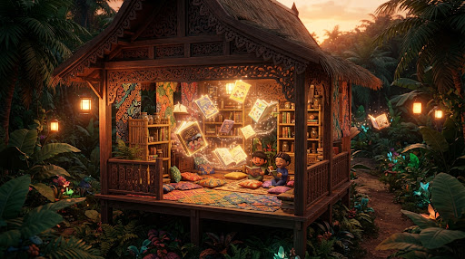

auto_stories
Tahun 1
Pustaka Rimba
Wakaf Buku Ajaib

Wakaf Buku • Terbuka
menu_book
12 Kisah Dongeng
arrow_back_ios_new
BM KSSR
Lentera Ilmu Menyinari Rimba
cruelty_free
Guru
Cikgu Sang Kancil
"Selamat datang ke Wakaf Buku, Wira Adam! Di sini, buku-buku ajaib bercahaya sedia untuk dibaca. Jom kita susun suku kata dan sebut perkataan bergambar bersama!"
1
+20 Bintang
Uji Minda: Suku Kata Terbuka
Lengkapkan perkataan berpandukan buku hikayat di wakaf!
auto_stories
Cantumkan menjadi nama objek:
Bu
+
ku
check
=
Buku
verified
Pilih suku kata pengisi:
lightbulb
Petua Sang Kancil: Suku kata 'bu' dicantum dengan 'ku' menjadi 'Buku' gedung ilmu!
Aktiviti Sudut Wakaf
KSSR Tahap 1
local_library
Rak Hikayat Rimba
Kisah Sang Kancil & Sang Buaya
music_note
Gendang Fonik Vokal
Irama a, e, i, o, u Dondang Sayang
style
Kotak Kata Bergambar
graphic_eq
Memainkan bunyi vokal...
check_circle